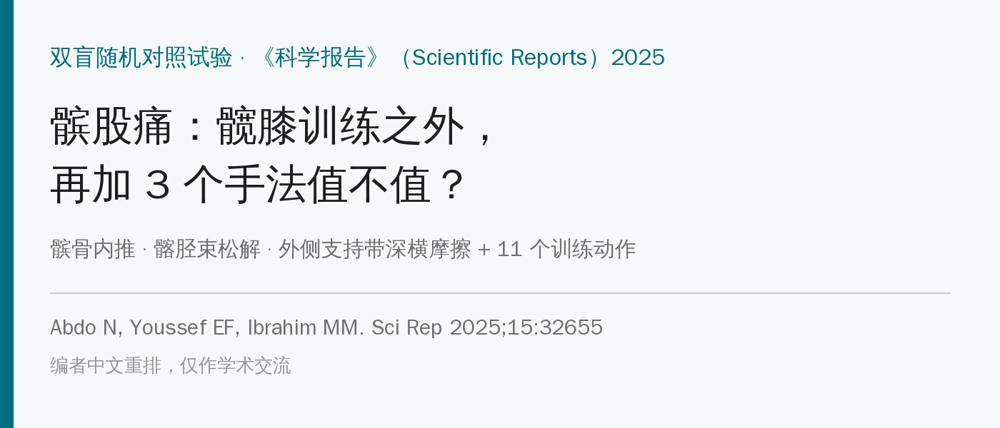
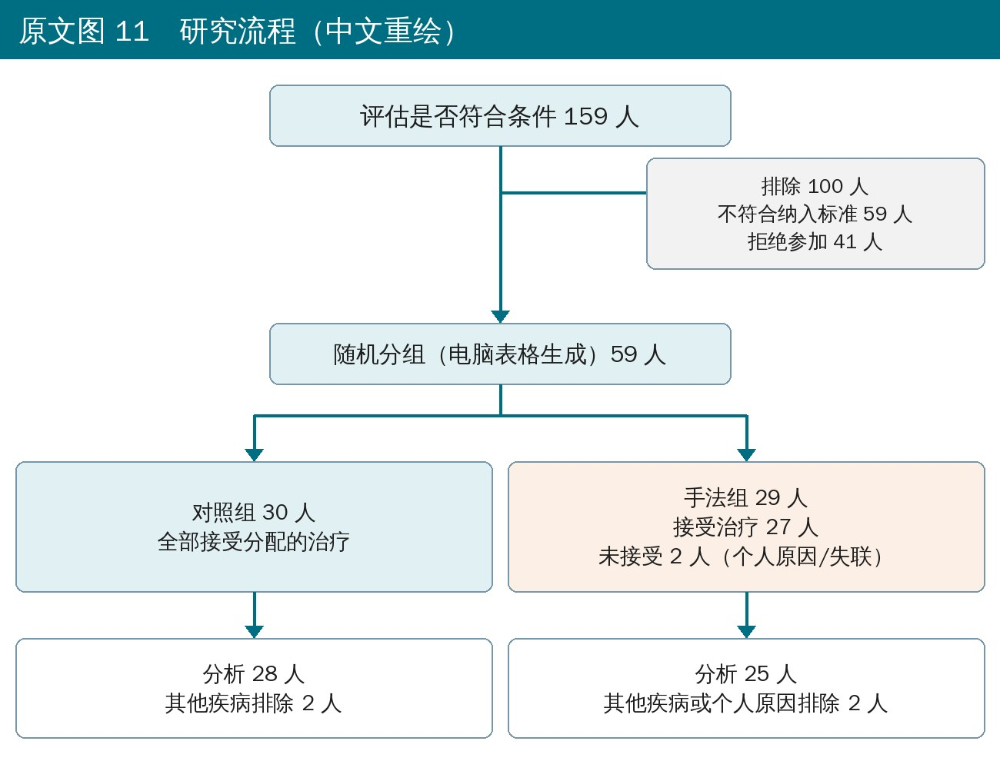
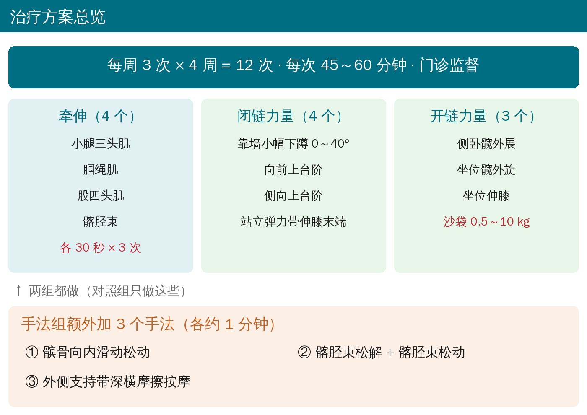
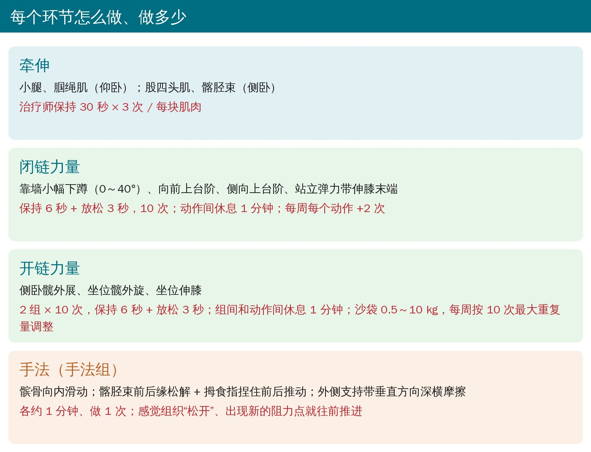
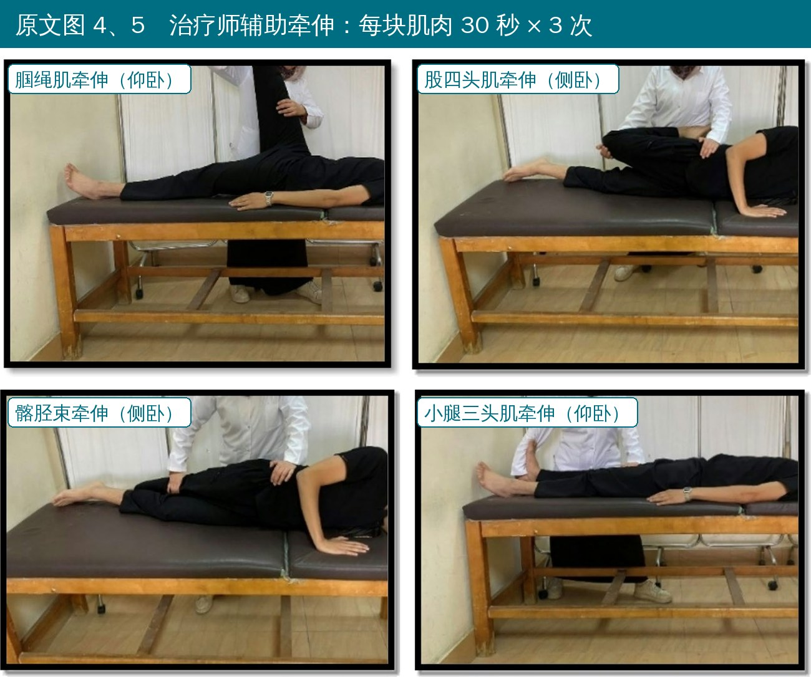
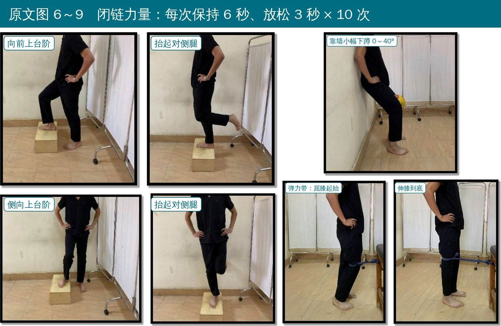
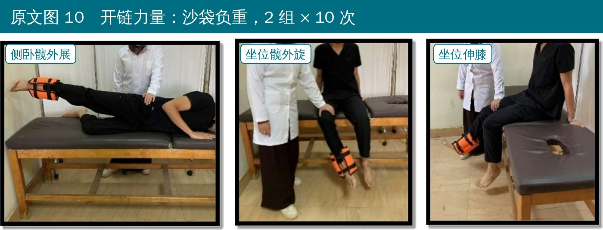
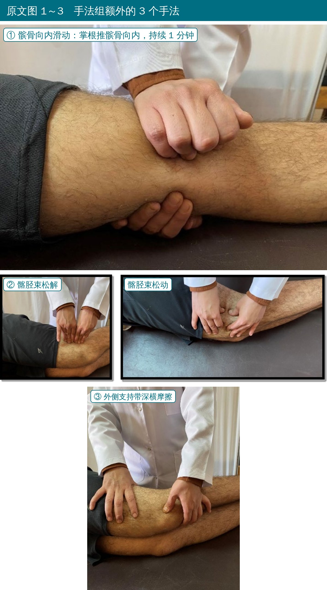
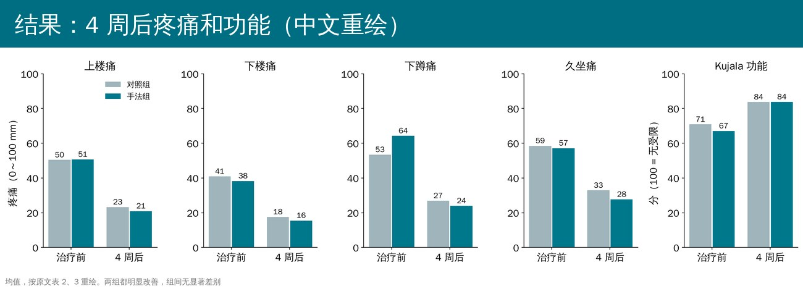

🔖原文信息（编者中文重排）
📚 文献信息
▪ Abdo N, Youssef EF, Ibrahim MM. Efficacy of adding manual therapy to hip and knee exercises in patients with patellofemoral pain syndrome: a double-blinded randomized controlled clinical trial. Sci Rep. 2025;15:32655.
▪ 作者来自埃及开罗大学物理治疗学院
▪ 双盲随机对照试验（临床试验注册号 NCT05665452）；DOI：10.1038/s41598-025-17453-9
髌股痛的康复，指南推荐的核心是髋和膝的力量训练 + 牵伸。很多治疗师还会顺手加几个手法：推髌骨、松髂胫束、揉外侧支持带。问题是——训练已经做足了，再加手法还有没有额外好处？
这篇的答案是：两组 4 周后疼痛、功能、力量、柔韧性都明显改善，但加不加手法没有显著差别。不过对临床更有用的是，它把11 个训练动作 + 3 个手法都配了照片、写清了剂量，可以整套拿来用。
• 对象：开罗大学物理治疗门诊和本校学生中 59 名 18～35 岁髌股痛患者（平均约 22 岁），症状超过 4 周，疼痛 >3/10
• 诊断：隐匿起病；髌骨内侧或外侧缘压痛、髌后痛；上下楼、跪、久坐、下蹲中至少 2 项诱发前膝痛；髌骨挤压试验阳性
• 分组：对照组 30 人只做训练；手法组 29 人做同样的训练 + 3 个手法
• 每周 3 次 × 4 周，共 12 次，每次 45～60 分钟，门诊进行
• 结局（不知道分组的评估者测）：上楼、下楼、下蹲、久坐时的疼痛，Kujala 髌股功能评分，髋外展、髋外旋、伸膝肌力，腘绳肌和小腿柔韧性，30 秒下台阶测试

🔖原文图 11 研究流程

🔖治疗方案总览

🔖每个环节的剂量

🔖原文图 4、5 治疗师辅助牵伸
• 腘绳肌：仰卧，治疗师抬起伸直的腿
• 股四头肌：侧卧，屈膝把足跟拉向臀部、髋后伸
• 髂胫束：侧卧，上方腿后伸并内收垂向床下
• 小腿三头肌：仰卧，膝伸直，治疗师把踝向背屈方向推
• 每块肌肉 保持 30 秒 × 3 次

🔖原文图 6～9 闭链力量
• 靠墙小幅下蹲：背靠墙，屈膝只到 0～40°，避开髌股关节压力最大的角度
• 向前上台阶：患腿踩台阶，蹬直把身体撑上去，对侧腿抬离地面
• 侧向上台阶：侧对台阶，患腿踩上去撑起身体
• 站立弹力带伸膝末端：弹力带套在膝后方，从微屈膝用力伸到完全伸直
• 剂量：每次保持 6 秒、放松 3 秒，做 10 次；动作间休息 1 分钟；每周每个动作加 2 次

🔖原文图 10 开链力量
• 侧卧髋外展：患腿在上，沙袋绑在踝上，膝伸直向上抬
• 坐位髋外旋：坐床边、屈膝 90°，沙袋绑踝，小腿向内摆（髋外旋）
• 坐位伸膝：坐位，沙袋绑踝，把膝伸直
• 剂量：2 组 × 10 次，每次保持 6 秒、放松 3 秒；组间和动作间休息 1 分钟；沙袋 0.5～10 kg，每周按 10 次最大重复量重新调整重量

🔖原文图 1～3 3 个手法
• ① 髌骨向内滑动：仰卧、膝伸直，治疗师用掌根把髌骨向内推，持续 1 分钟，做 1 次
• ② 髂胫束松解：仰卧，双手手指垂直插入髂胫束与股外侧肌之间（前缘）、髂胫束与股二头肌之间（后缘），每处持续施压 1 分钟
• 髂胫束松动：双手拇指和食指捏住髂胫束，按受限方向向前或向后推动，持续 1 分钟
• ③ 外侧支持带深横摩擦：仰卧，手指垂直于支持带纤维方向做深横摩擦，1 分钟
• 进阶：感觉组织“松开”、出现新的阻力点时，就往前推进

🔖4 周后疼痛与功能
• 两组上下楼、下蹲、久坐时的疼痛都下降一半左右，Kujala 功能评分都从约 70 分升到约 84 分
• 髋外展、髋外旋、伸膝力量，腘绳肌和小腿柔韧性，30 秒下台阶次数，两组也都提高
• 组间所有指标都没有显著差别；手法组多数指标的改善百分比略高
• 髌股痛的主角是训练：这套 4 周、12 次的髋膝力量 + 牵伸方案，单独做就能明显减痛、改善功能
• 闭链动作用“保持 6 秒 + 放松 3 秒”的等长停留和0～40° 的小角度下蹲，对疼痛明显的患者很友好；每周加 2 次即可进阶
• 开链用沙袋就能做，按 10 次最大重复量每周调整，在家也能复制
• 髌骨内推、髂胫束松解、外侧支持带摩擦这 3 个手法每个只要 1 分钟，可以作为训练前的准备；但不要指望它们替代训练
原文表 1 基线资料（均值 ± 标准差）
| 项目 | 对照组（28 人） | 手法组（25 人） | P |
|---|---|---|---|
| 年龄（岁） | 22.64 ± 3.71 | 21.92 ± 2.39 | 0.41 |
| 体重（kg） | 64.87 ± 11.51 | 68.06 ± 8.96 | 0.27 |
| 身高（cm） | 167.19 ± 8.27 | 166.20 ± 9.51 | 0.69 |
| 体重指数（kg/m²） | 23.18 ± 3.60 | 24.77 ± 3.63 | 0.12 |
原文表 2 疼痛（视觉模拟评分，0～100 mm，均值 ± 标准差）
| 情境 | 对照组 | 手法组 | 组间差（95%CI） | P | |
|---|---|---|---|---|---|
| 上楼 | 治疗前 | 50.39 ± 25.42 | 50.68 ± 23.43 | −0.29（−13.82～13.25） | 0.97 |
| 治疗后 | 23.25 ± 18.12 | 20.96 ± 17.16 | 2.29（−7.47～12.05） | 0.74 | |
| 改善 | 53.86% | 58.64% | |||
| 下楼 | 治疗前 | 40.93 ± 23.36 | 38.28 ± 24.75 | 2.65（−10.62～15.92） | 0.69 |
| 治疗后 | 17.64 ± 17.79 | 15.52 ± 17.12 | 2.12（−7.54～11.78） | 0.93 | |
| 改善 | 56.90% | 59.46% | |||
| 下蹲 | 治疗前 | 53.43 ± 26.88 | 64.28 ± 28.59 | −10.85（−26.16～4.45） | 0.16 |
| 治疗后 | 26.89 ± 22.31 | 23.96 ± 18.56 | 2.93（−8.46～14.34） | 0.09 | |
| 改善 | 49.67% | 62.73% | |||
| 久坐 | 治疗前 | 58.54 ± 31.55 | 57.16 ± 31.34 | 1.38（−15.99～18.75） | 0.87 |
| 治疗后 | 32.86 ± 24.22 | 27.68 ± 25.52 | 5.18（−8.55～18.89） | 0.66 | |
| 改善 | 43.87% | 51.57% |
组内前后比较 P 均 <0.001。
原文表 3 Kujala 功能评分
| 对照组 | 手法组 | 组间差（95%CI） | P | |
|---|---|---|---|---|
| 治疗前 | 70.86 ± 13.76 | 67.08 ± 13.56 | 3.78（−3.77～11.33） | 0.32 |
| 治疗后 | 83.75 ± 9.50 | 83.84 ± 10.63 | −0.09（−5.64～5.46） | 0.20 |
| 改善 | 12.89 分（18.19%） | 16.76 分（24.99%） |
原文表 4 肌力（按体重标准化，均值 ± 标准差）
| 肌群 | 对照组 | 手法组 | 组间 P | |
|---|---|---|---|---|
| 髋外展 | 治疗前 / 后 | 14.83 ± 5.66 / 17.51 ± 4.88 | 13.15 ± 4.46 / 16.08 ± 5.39 | 0.24 / 0.84 |
| 髋外旋 | 治疗前 / 后 | 13.34 ± 5.02 / 15.28 ± 4.93 | 12.01 ± 4.72 / 13.88 ± 6.38 | 0.33 / 0.95 |
| 伸膝 | 治疗前 / 后 | 23.81 ± 9.76 / 31.41 ± 12.07 | 25.74 ± 11.22 / 30.28 ± 12.01 | 0.51 / 0.17 |
原文表 5 柔韧性（°，均值 ± 标准差）
| 对照组 | 手法组 | 组间 P | ||
|---|---|---|---|---|
| 腘绳肌（腘角） | 治疗前 / 后 | 44.86 ± 13.67 / 55.61 ± 10.27 | 51.05 ± 11.76 / 60.95 ± 12.59 | 0.09 / 0.82 |
| 小腿（踝背屈角） | 治疗前 / 后 | 37.31 ± 9.91 / 40.48 ± 8.51 | 33.82 ± 8.22 / 39.53 ± 6.73 | 0.17 / 0.28 |
原文表 6 30 秒下台阶测试（次，中位数 ± 四分位距）
| 对照组 | 手法组 | |
|---|---|---|
| 治疗前 | 12 ± 5 | 13 ± 4 |
| 治疗后 | 15 ± 5 | 16 ± 4 |
| 改善 | 3 次（25%） | 3 次（23.08%） |
欢迎关注骨科康复小黄公众号，获取更多物理治疗的专业知识！
📄参考文献：
Abdo N, Youssef EF, Ibrahim MM. Efficacy of adding manual therapy to hip and knee exercises in patients with patellofemoral pain syndrome: a double-blinded randomized controlled clinical trial. Sci Rep. 2025;15:32655. doi:10.1038/s41598-025-17453-9
原文以 CC BY 4.0 协议开放获取。本文为学术交流用的中文解读，动作照片引自原文图 1～10 并加中文标注，方案卡、流程与结果图为编者中文重绘，表格为编者翻译。